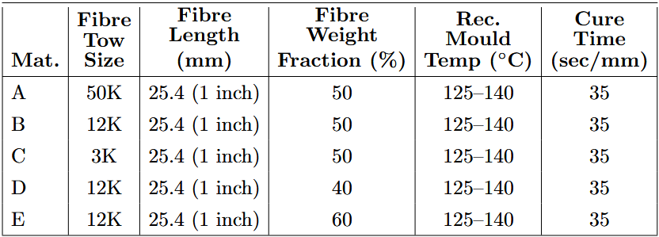
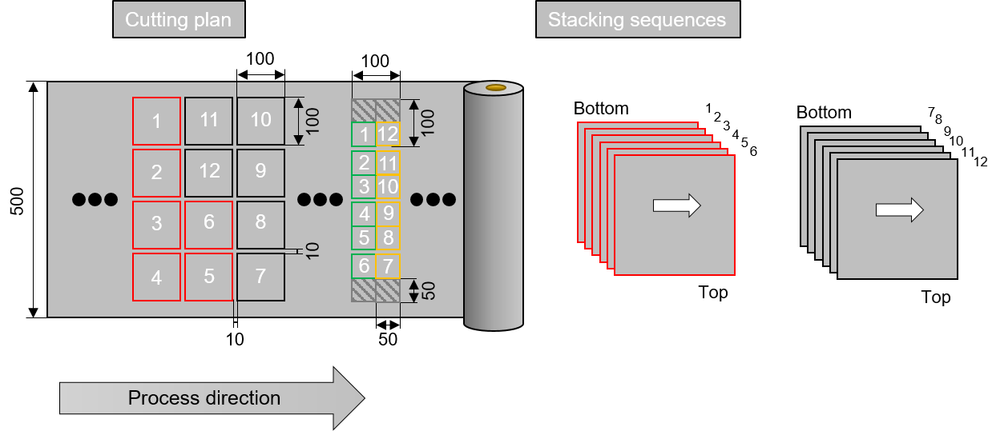
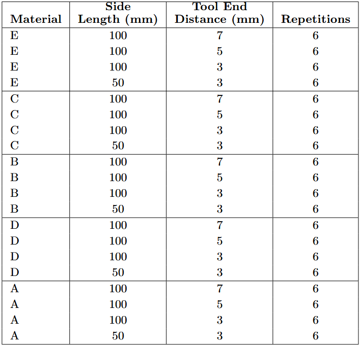
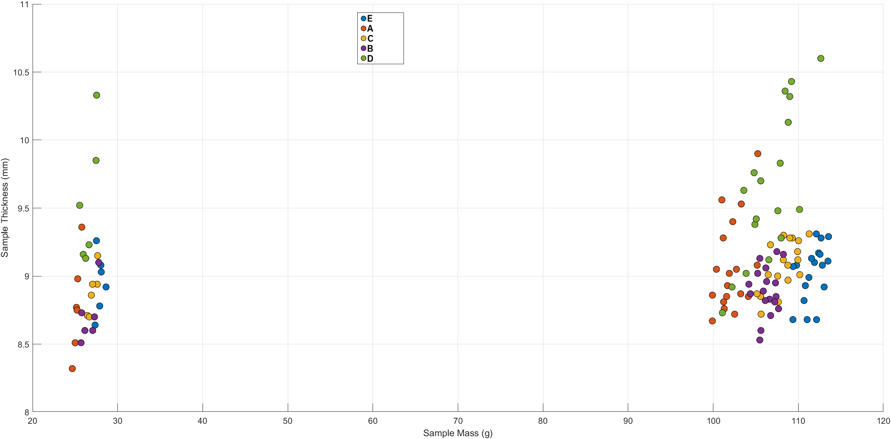
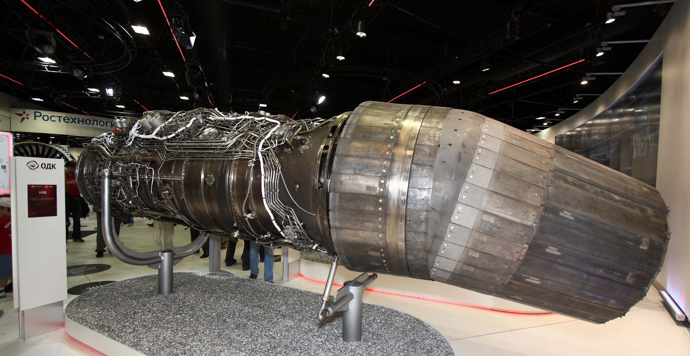

Abraham Andika Satria
I am a mechanical-aeronautical engineer experienced with experimental research on supersonic flow and composites forming, as well as exploring computational research on fluidic injection.
Research projects
During my MSc Mechanical Engineering programme at the University of Twente.
Leeside Supersonic Flow over Delta Wings: A Side-View Background-Oriented Schlieren Investigation
Squeeze Flow Characterization of Carbon Sheet Molding Compound (C-SMC) Using a Simplified Biaxial Extension Model
Computational Investigation of Multiple Injection Plenums and Porous Wall Injection in a Fluidic Thrust-Vectoring Axisymmetric Dual Throat Nozzle
Leeside Supersonic Flow over Delta Wings: A Side-View Background-Oriented Schlieren Investigation
What flow features arise on the leeside of delta wings at supersonic speeds and at different angles-of-attack, and what can the side-view conventional and Background-oriented Schlieren techniques reveal about it?
.jpg){kind=link}
{kind=link}
Line-of-sight averaged density. Dark colors: low density, light colors: high density.
Motivation
Delta wings continue to be studied for the development of future combat aircraft, as these aircraft need to stay controllable when maneuvering aggressively at high pitch angles, even at supersonic speeds (Fig. 1). This means that the vortex flow systems on the delta wing must remain stable and avoid potential breakdown due to interactions with other vortices, shocks, and boundary layers (Fig. 2). To achieve these goals, a proper understanding of the flow structures on the leeside of delta wings is necessary, especially to serve as a validation for computational results simulating complex vortex systems and their interactions.
Experimental motivation
Most studies utilize top-view (planform sight) and back-view (trailing-edge sight) measurement techniques to visualize the flow structures. However, side-view investigation techniques, e.g., conventional Schlieren, can also provide additional insights about terminating shocks and other flow phenomena (Fig. 3). Additionally, the Background-oriented Schlieren (BOS) technique can obtain spanwise-averaged quantitative density data in the flow field without the need of intrusive measurement sensors.
Objective in a nutshell
- Design delta wing experiment apparatus for use in supersonic wind tunnel.
- Develop a Background-oriented Schlieren system and demonstrate its feasibility for side-view investigation of delta wings.
- Identify leeside flow features and relate to canonical plan-view measurement results in literature.
Methodology in a nutshell
- A single-delta wing planform model along with a system to vary angle-of-attack, were designed with SolidWorks (Fig. 4). The wingspan is b = 14 mm, with sweep angle ψ = 65°.
- To satisfy aerodynamic and mechanical requirements during supersonic flow tests, simulations using ANSYS Fluent and Mechanical were conducted. The wing and sting designs were consequently updated.
- After additional design iterations to fulfill manufacturability requirements, the parts were milled with the help of two departments at the University of Twente (Fig. 5).
- The Background-oriented Schlieren system was developed by adapting the readily available conventional Schlieren setup: several background patterns were tested and an image processing algorithm was implemented to calculate the density field from high-speed images. The algorithm pipeline consists of: preprocessing, Farnebäck deflection sensing algorithm, and Poisson equation density solver.
- Supersonic wind tunnel experiments were conducted. The side-view investigation techniques were used to obtain visualization and quantitative data of a slender 65° single-delta wing at M∞ = 1.6 for four angles-of-attack α = 0°, 4°, 8°, 12°.
- The flow structures visible in the side-view flow visualizations (Schlieren image and BOS density field) are identified and compared with the canonical flow regime charts developed by past authors.
Setup
The study is conducted in the supersonic wind tunnel facility of the Thermal and Fluid Engineering department at the University of Twente (Fig. 6). Both the conventional and Background-oriented Schlieren uses a set of collimating lens, Vertical-Cavity-Surface-Emitting-Laser (VCSEL) for the light source, a Phantom V611 high-speed camera attached with a Nikon TC-20 E AF-S Teleconverter II lens, and the Phantom Camera Control software for capturing images. The Schlieren system uses a knife to block certain light rays in order to visualize the density gradients in the flow, as seen in the schematic (Fig. 7). The BOS system uses a back-illuminated binary random dot pattern, positioned as seen in the schematic (Fig. 8), whose distortions will be processed by the BOS algorithm pipeline to calculate the line-of-sight averaged density field.
BOS Development Results
Figures 9-14 shows the development and processing pipeline of the BOS algorithm. The comparison between synthetic (Fig. 12) and conventional (Fig. 13) Schlieren shows correspondence between the two.
The resulting displacement fields (Fig. 14) portray the flow features observed in the conventional Schlieren visualizations and the density fields conforms to expected flow physics, demonstrating the feasibility and potential of the BOS technique for utilization in the supersonic wind tunnel facility of the University of Twente. The present work managed to establish a working BOS pipeline–through pattern testing and implementation of preprocessing, displacement calculation,and density calculation modules–and yields promising results.
Supersonic Delta Experiment Results
The single-delta wing model (ψ = 65°) is tested at M∞ = 1.6 at four angle-of-attacks. Following the canonical leeside flow regime classification charts in literature (Miller and Wood, 1985; Brodetsky et al., 2000; Kharitonov et al., 2007), each test case is mapped to the components normal to the leading-edge:
$$ M_N = M_\infty \cos\psi \sqrt{1 + \sin^2\alpha \, \tan^2\psi}, \qquad \alpha_N = \arctan\!\left(\frac{\tan\alpha}{\cos\psi}\right) $$
The four test cases on the Brodetsky/Kharitonov regime chart (Fig. 23) are located on the map as follows: 0° on the attached flow line, 4° in the separation bubble region (A), α = 8° in the primary vortex region (B1), and α = 12° in the primary and secondary vortex region (B2).
The table (Fig. 24) summarizes the comparison between the observed flow regime according to the Schlieren visualization images and the expected flow regime according to literature (Miller and Wood, 1985; Brodetsky et al., 2000; Kharitonov et al., 2007). The best matching case was α = 0°, where only attached flow with no shock is observed on the leeside. However, the cases α = 4°, 8° also produced attached flow instead of observable flow separation. Whereas with the case α = 12°, flow separation was observed, but it is unclear whether the form is a separation bubble or vortex flow. From a side-view investigation alone, this is not identifiable, since both the conventional Schlieren and Background-oriented Schlieren resolve a line-of-sight integral. The growth of the separated flow structure in the chordwise direction is consistent with literature, as similarly observed using top-view measurement techniques (Miller and Wood, 1985; Donohoe and Bannink, 1997).
Discussion on leeside flow features
The lack of separated flow for cases α = 4◦, 8◦ may be attributed to several things. Firstly, due to the limitations of manufacturing capabilities, the thickness of the wing had to be doubled from the original design to avoid distortion during milling. Secondly, the sharpness of the leading-edge also has to be compromised again due to manufacturing limitations. Thirdly, due to the design constraints pertaining to structural integrity of the delta wing model, the sting is large and takes up a large part of the windside (lower side) of the wing. Although the investigation is directed at the leeside flow, it might be that the windside flow also influences it, as the pressure difference between the two surfaces accelerates the flow around the leading-edge (Furman and Breitsamter, 2006).
Although case α = 12◦ produced a separated flow structure (unresolved whether it is separation bubble or vortex), the growth was only observed towards the end of the trailing-edge. One simple explanation is that the model single-delta wing is too small, at cr = 15 mm to allow the separated flow to fully develop into a vortex system. Still related to the small size of the model: a low Reynolds number (Re = 2 × 105) follows from a small characteristic length (i.e., chord length cr), and although this falls outside the scope of the current study, literature has shown that low Reynolds number flow on a single-delta wing tend to stunt the development of vortex structures (Ol and Gharib, 2003).
Concluding Remarks
This study manages to build a supersonic delta wing experimental method, using a side-view conventional Schlieren technique and also an implemented Background-oriented Schlieren system. A ψ = 65◦ single-delta wing model and a set of angle-of-attack-varying sting fixtures were designed and manufactured. A working BOS pipeline with preprocessing, displacement calculation, and density calculation modules were developed and yields promising results. The leeside flow features of the single-delta wing at M∞ = 1.6 and α = 0◦, 4◦, 8◦, 12◦ were identified and compared to the canonical flow regime chart in literature. The mismatch between the expected and observed regimes of the classification chart could be mitigated by manufacturing model wings and stings without design compromise and operating the wind tunnel at a higher Reynolds number. The BOS system could be further developed to produce verifiable density field data.
Squeeze Flow Characterization of Carbon Sheet Molding Compound (C-SMC) Using a Simplified Biaxial Extension Model
How well does a pure biaxial extension model describe the squeeze flow of Carbon Fiber SMC?




Motivation
The background of this research is a benchmarking effort by ThermoPlastic composites Research Center as part of the First European C-SMC Squeeze Flow Material Characterization Benchmark Exercise, a collaborative initiative involving several academic and research institutions across Europe, including the University of Sheffield and Leibniz-Institut für Verbundwerkstoffe GmbH (IVW).
Carbon Fiber Sheet Moulding Compound (C-SMC) is a widely used material in the automotive and aerospace industries due to its versatility (Fig. 1). In compression moulding, the squeeze flow behavior of Sheet Moulding Compound (SMC) is of significant interest for both fundamental research and manufacturing process optimization (Fig. 2). Literature consistently indicates that SMC squeeze flow is predominantly governed by biaxial extension rather than shear deformation. However, the squeeze flow behavior of C-SMC is not widely investigated. This research aims to extend the squeeze flow experimental framework employed by Kotsikos and Gibson (1998) to characterize Carbon Fiber SMC using the pure biaxial extension model.
Objective in a nutshell
- Conduct squeeze flow experiments for several C-SMC materials with various specimen and experiment configurations.
- Conduct model fitting of the squeeze flow data to a pure biaxial extension model adapted from literature (Kotsikos and Gibson, 1998).
Methodology in a nutshell
- The materials used in this study were commercially available carbon fiber/vinyl ester (VE) sheet molding compound (C-SMC) materials, all sharing the same resin recipe. Specifications are listed in Fig. 4.
- The specimens were prepared following a standardized configuration: cut into lengths of 100 or 50 mm, one specimen consists of six stacked plies. The sample preparation template is provided in Fig. 5.
- The thickness and masss of each specimen were measured using the setup in Fig. 6-7, before subjected to the squeeze flow experiment.
- Specimens were compressed between two heated, temperature-controlled platens while force and displacement were recorded. The experiments were conducted using a compression platen fixture mounted on an INSTRON universal testing machine. Two linear variable differential sensors (LVDTs) were used to measure the relative displacement between the platens (Fig. 8).
- The tests are conducted using an open-cavity and constant mass configuration, such that the sample can flow freely without obstructions and without overflow from the tooling platens, as seen in Fig. 9. The temperature of both the top and bottom tooling platens are 140 °C. The tool closing velocity h˙ is 0.5 mm/s. The tool end distance, therefore the final thickness of the specimen after compression, is set to be 3 mm, 5 mm, and 7 mm. The complete experiment configuration is presented in Fig. 10, where there are 6 experiments for each configuration, in total 120 experiments.
- Load-extension (negative extension = compression) data is fitted using nonlinear least-squares to the pure biaxial extension model.
Mathematical Model
Squeeze flow is the phenomenon when a material undergoes deformation and flows due to compression force exerted by two surfaces enveloping it. This phenomenon is fundamental to compression molding process, where the material flows within the mold cavity under applied pressure. The theory is based on the concept that force dissipation during compression can be expressed with the deformation of the material, resulting in constitutive models based on power-law equations (Bird et al., 1987).
Kotsikos and Gibson (1998) proposed a variational flow model that allows the flow behavior to range between pure shear and pure biaxial extension. Both models employ isothermal conditions throughout the thickness of the specimen to determine the viscosity values. However, this research employs the assumption of pure biaxial extension instead, because of full slip at the platen–material interface. This boundary condition is the result of a release agent on the foils fixed to the hot platens. Furthermore, rather than assuming constant area under compression as Kotsikos and Gibson did, the experiments were conducted under a constant mass configuration. Hence, the model becomes:
$$ F = \left(\frac{V}{h}\right) A_\mathrm{e} \left|\frac{\dot{h}}{h}\right|^{n} $$
where \(V = L_0^2 h_0\) is the initial sample volume and \(A_\mathrm{e}\) is treated as a constant.
Results
Fig. 11 shows the initial mass and thickness measurements of all the samples tested. The scatter plot helps to understand the squeeze flow data of certain materials. For example, material D (green dots) have a large spread of thickness measurements, which results in a large spread of force measurements in the squeeze flow experiment.
For conciseness, only the results of one experiment configuration for each C-SMC material is displayed here.
The force–extension measurements generally follow the same pattern for all experiments. At the latter stages of compression, there was not an extreme increase in force vs compression response, which could indicate that an increase in fiber-fiber interaction did not occur. This non-occurrence may further suggest that fiber clustering was less influential than expected in these tests. However, there is a considerable spread between measurements, which can be caused by differences in initial mass and thickness of the samples, as seen in Fig. 15 (material D).
During the squeeze flow experiment, it was visually observed that the flow in the latter stages of compression (≈ -5 to -3 mm) tend to be more uniform than in the initial stages, meaning that the behavior approaches a plug flow. This is confirmed by the fitted power law index n approaching 0 (Kotsikos and Gibson, 1998). However, n does not stay constant for all fitting ranges, due to the simplified biaxial extension model, where the extensional power law constant Ae is assumed to be constant, whereas in the pure model it is dependent on shear Ae(ε). Despite several peculiarities, this work managed to demonstrate that the biaxial extension model– although simplified–could characterize the squeeze flow behavior of C-SMC materials to an extent.
Future work should employ a strain-dependent extensional viscosity Ae(ε) to investigate whether the power law index n will be consistent between fitting ranges. Additionally, using the variational model of biaxial extension and shear (Ftotal = Fext + Fshear) will better capture the influence of shear flow in the squeeze flow experiment. Video imaging could be utilized to capture the velocity field throughout the specimen, to investigate the uneven flow behavior during the initial stages of compression and the plug flow behavior during the latter stages (Bieleman, 2024).
Concluding remarks
As an attempt to investigate the squeeze flow behavior of C-SMC, a simplified biaxial extension model was fitted to the force–measurement data with a piecewise fitting approach. The fitted model of the latter fitting ranges conformed to the experimental data. However, the fitted power law index n were generally not consistent between the fitting ranges, indicating that the simplified model could not perfectly describe the squeeze flow behavior of C-SMC. Future research should employ more accurate models based on a strain-dependent extensional viscosity, a variational approach between biaxial extension and shear model, as well as investigate the velocity distribution across the thickness during the squeeze flow experiment.
Computational Investigation of Multiple Injection Plenums and Porous Wall Injection in a Fluidic Thrust-Vectoring Axisymmetric Dual Throat Nozzle
What is the influence of multiple injection plenums and porous wall injection on flow separation control in a fluidic thrust-vectoring axisymmetric Dual Throat Nozzle?

.jpg){kind=link}
Motivation
Thrust-vectored propulsion (Fig. 1) enhances an aircraft’s (super-)maneuverability even on post-stall conditions, helps satisfy requirements to perform missions in its flight envelope, and provide more flexible design options due to the increased capabilities. While nowadays mechanical thrust-vectoring is comfortably utilised in fighter aircraft, fluidic thrust-vectoring offers weight and cost reduction, and increased survivability, due to the lower parts count and simpler actuators. One recent breakthrough is an axisymmetric Dual Throat Nozzle (DTN) design that uses the Throat Shifting method augmented with Flow Separation Control (Fig. 2). This study proposes to investigate the potential benefits of multiple injection plenums (Fig. 3-4) and porous wall injection to improve thrust-vectoring performances.
Objective in a nutshell
- Design fluidic multiple plenum and porous wall injection configurations.
- Evaluate several thrust and thrust-vectoring performance parameters.
- Visualize nozzle flow for the different injection configurations to gain insight on flow separation in the DTN concept.
Methodology in a nutshell
- Nozzle configuration 302 (Fig. 5) is chosen due to its shorter nozzle length (less weight) and yet improved thrust performances, with only a small detriment on thrust-vectoring performances.
- The 60◦ circumferential injection angle (Fig. 6) is chosen for all configurations, due to the balanced compromise between thrust-vector angle and internal nozzle performance.
- There injection configurations consist of: seven fluidic injection plenums configuration and three porous wall injection configurations. (Fig. 7)
- All of the injection plenums will have an injection slot width of 0.1334 cm and an injection angle of 150◦. The plenum distance from upstream minimum throat variables, x1, x2, and x3 is in the x-direction according to Fig. 5. Meanwhile, the injection porous walls will each have 100 pores with varying nominal pore diameter. The complete configurations can be seen in Fig. 7.
- The performance parameters consist of: the pitch thrust-vector angle δp, yaw thrust-vector angle δy, pitch thrust-vectoring efficiency ηp, yaw thrust-vector efficiency ηy, system thrust ratio Cf and nozzle discharge coefficient Cd. This will be conducted for all ten injection configurations across a range of Nozzle Pressure Ratio (NPR) and secondary injection flow rates.
- The internal flow across a range of NPR and secondary injection flow rates will be visualized using synthetic Schlieren imaging using the CFD solver and post processing codes.
The proposed study will build upon the previous axisymmetric DTN studies, thereby following several design options from Deere et al. (2007).
Computational scheme in a nutshell
- The study will be conducted with PAB3D, a 3-D RANS solver that is well-established for aeropropulsive and aerodynamic applications.
- The thin-layer Navier-Stokes viscous model will be used to reduce computational load (Deere et al., 2003).
- The space-marching, numerical schemes to be used in each block are van Leer’s flux vector-splitting scheme (van Leer, 1982), Roe’s flux difference-splitting scheme (Roe, 1986), and the Spekereijse-Venkate limiter (Deere et al., 2007).
- Solutions in space and time will be third-order and second-order accurate, respectively, with the latter attainable using a dual time sub-iteration scheme for time advancement formulation(Massey and Abdol-Hamid, 2003; Deere et al., 2007).
- Unsteady RANS equations will be solved using a linear k-ϵ turbulence model, with the modified Jones and Launder damping function to prevent singularity at the wall (Jones and Launder, 1972; Deere et al., 2007).
- The performance characteristics including pressure distribution, nozzle performance, thrust-vector angles, and flow contours will be calculated with the PAB3D post processor code: POST.
- Together with POST, another performance code called Oracle will be utilised to create Schlieren flow visualisation images from surface pressure data (Waithe and Deere, 2003). The Schlieren images will be used to observe an understand the flow separation and overall thrust and thrust-vectoring flow behaviour more comprehensively.
Concluding Remarks
This study proposes an investigation of potential benefits of multiple injection plenums and porous wall injection in order to improve the thrust-vectoring performance of an axisymmetric Dual Throat Nozzle. Ten injection configurations is to be evaluated using the unsteady RANS solver PAB3D. The effects of multiple injection plenums and porous wall injection on flow separation control can be evaluated using performance parameters: pitch and yaw thrust-vector angles, pitch and yaw thrustvectoring efficiencies, system thrust ratio, and nozzle discharge coefficient. Furthermore, the internal flow can be visually analysed using Schlieren images constructed from the post processor code POST and Oracle.
Skills
Experimental techniques
- conventional Schlieren
- Background-oriented Schlieren
- Supersonic wind tunnel
- Universal testing machine
Measurement & analysis
- Data acquisition & image processing
- Uncertainty & error analysis
- Calibration
- Design of experiments
Software/computational
- SolidWorks
- ANSYS Fluent & Mechanical
- Python (NumPy, SciPy, OpenCV)
- MATLAB
- COMSOL Multiphysics
Transferable
- Rig design & fabrication
- Instrumentation troubleshooting
- Validation against theory
- Technical writing
About Me
{kind=link}
{kind=link}
.jpg){kind=link}
Hello! My name is Abraham and I recently obtained my master's degree in Mechanical Engineering from the University of Twente (MSc and ir./ingenieur). I mainly specialized in Aeronautics and took electives from the Energy and Flow specialization, as these areas are my calling.
Whether breaking the sound barrier, cutting through the waves, burning rubber, or piercing the atmosphere, a vehicle with dedicated functions and apex performance will always fascinate me. In any given domain, fluid dynamics, propulsion, materials as well as its mechanics all play a decisive factor for a vehicle performance. These are the disciplines I enjoy studying–especially as a vehicular system–and I want to contribute the knowledge obtained largely during my comprehensive education to the benefit of mankind. Yet learning is a lifelong endeavor, so I am excited to widen and deepen my expertise in engineering from seniors in the industry.
That said, since mechanical engineering is in my DNA, I am excited to work in any industry! Solving problems, actualizing designs, optimizing performance: these are things I love to do regardless of the industry, and being able to build a career in any specialized field is a privilege. More importantly, I want to collaborate with fellow engineers (or non-engineers too!) from different fields. I enjoy working in a team, in unison striving to achieve a joint objective.
Open to graduate roles!
Let's talk
Feel free to reach out for inquiries about these projects or myself. Send a message through LinkedIn and I will reply promptly!
Messages and connection requests both reach me!
- Based in
- Hengelo, the Netherlands
- Open to
- All things mechanical & aeronautical engineering — on-site or hybrid
- Focus
- Experimental and computational fluid dynamics, R&D, mechanical design.
- Response
- 1-2 days